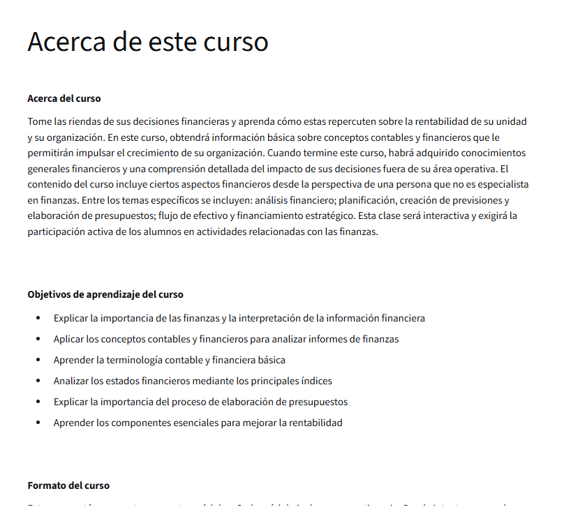

Todo lo que necesitas saber sobre este programa antes de comenzar.

Este curso está diseñado para profesionales del mundo de los negocios que no se especializan en finanzas ni contabilidad, pero que necesitan entender y participar con confianza en conversaciones financieras dentro de sus organizaciones.
A través de 4 módulos progresivos, el curso cubre desde los conceptos más básicos de la contabilidad hasta métodos avanzados de valoración de empresas e inversiones, pasando por el análisis de costos y el uso de índices financieros.
A gerentes, directivos, emprendedores y cualquier profesional que quiera comprender mejor los estados financieros de su empresa, tomar mejores decisiones y comunicarse con fluidez con los equipos de finanzas y contabilidad.
El curso está organizado en 4 módulos, cada uno con sus respectivos temas en video y un taller práctico al final para reforzar los conceptos aprendidos.